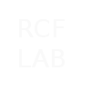

Revision 3.0 of this website scheduled for release late December 2017.
About Me:
- Third year BASc in Computer Engineering student.
- Proficient in Java 8, Python 2.7/3 and C. Resume.
- UNIX / GNU/Linux and Libre Software enthusiast.
- Working knowledge of cLISP, Haskell and shell scripting.
- Prefers the simplicity and power of the command line.
- Robust knowledge of RHEL, Debian and SUSE Linux products, and their respective downstream distributions, for desktop and small-server use.
Contact:
- VIA Email: ryan.fleck[at]protonmail.com
- VIA Telephone: 613 5[zero]1-4043
- VIA IRC: rflec028 on most networks.
Ongoing Projects:
- Getting my BASc CompEng: Courses I have completed.
- LibGDX BattleCommander, : Current Release.
- Billions of tiny scripts, saved pieces of my operating systems: Github Repo.
- I write about tech sometimes, working on a simple md->html tool like Jekyll so I can re-upload all my old dev logs and thought pieces.
Useful Links:
- Current tech resume: RCF_CV_F17.pdf
- My VIM configuration file: .vimrc
